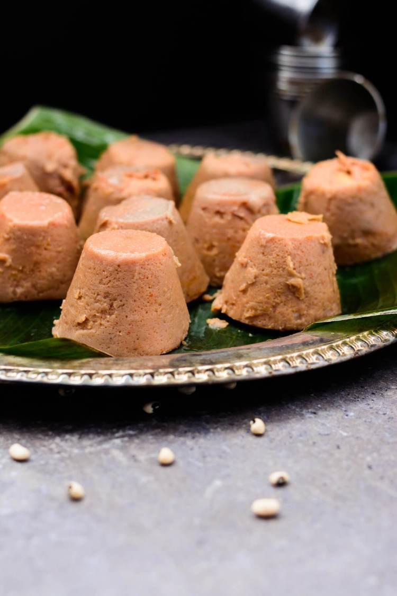

Moi-moi

Description
This is a Nigerian delicious, savory steamed bean pudding made from blended black eyed peas,
peppers, onions and spices
Ingredients
- 1.5 cups of black eyed peas
- 1/2 large bell pepper
- 3 teaspoon of salt
- 1/2 large onion
Steps
- Boil water in electric kettle and measure 4 cups into pot
- Cover the pot and leave water to boil
- Lower heat then add in the yam flour into water at a go then stir with turning spoon till it comes together
- Add in the reserved cup of water, cover and leave to steam for 1-2 minutes
- Stir amala till it's smooth and fluffy
Go to homepage